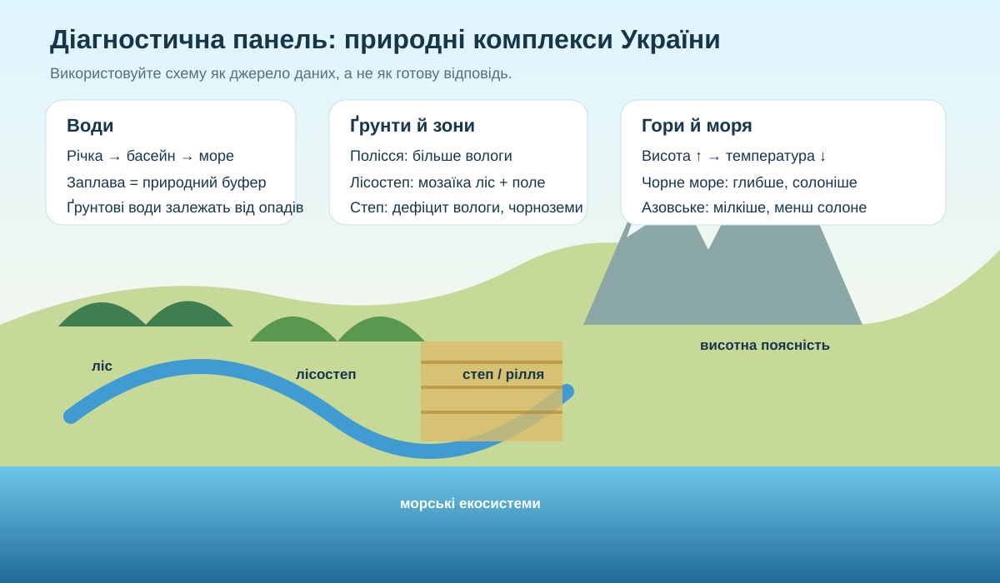

0–3 хв
Перед початком
Введіть дані. Робота відкриється після заповнення всіх полів.
Оцінювання: по 4 бали за ГР1, ГР2 і ГР3. Усього — 12 балів.
3–6 хв
Спільне джерело для кількох завдань

Це навчальна узагальнювальна схема. Вона не замінює карту, але дає причинні підказки для аналізу.
Правило: у завданнях на доказ шукайте зв’язок між компонентами: вода ↔ ґрунт ↔ рослинність ↔ рельєф ↔ господарство. Відповідь «бо так написано» географічно беззмістовна.
Можна
Чернетка, калькулятор, атлас. Даних на сторінці достатньо для виконання роботи.
Не потрібноШукати готові відповіді в інтернеті: оцінюється саме аналіз.
6–16 хв • ГР1
ГР1. Досліджуємо й працюємо з даними — 4 бали
1 бал1. Річка бере початок у межах України й впадає в Чорне море. Який ланцюг понять коректний?
1 бал2. У двох ділянок однакова кількість опадів, але на першій випаровуваність значно вища. Де ймовірніший дефіцит вологи?
1 бал3. Який набір ознак найкраще відповідає природному степу?
1 бал4. Чорне море має значно більшу максимальну глибину, ніж Азовське. Який висновок із цього найбезпечніший?
16–26 хв • ГР2
ГР2. Пояснюємо просторові закономірності — 4 бали
1 бал5. Чому на Поліссі поширені заболочені ділянки?
1 бал6. Чому чорноземи й інтенсивне землеробство часто поєднуються у степу та лісостепу?
1 бал7. Чому в Карпатах і Кримських горах природні комплекси змінюються з висотою?
1 бал8. Чому значна частина глибинних вод Чорного моря бідна на кисень?
26–32 хв • ГР3
ГР3. Оцінюємо ризики й обираємо рішення — 4 бали
1 бал9. На розораному схилі після злив регулярно змивається ґрунт. Яке рішення найкраще зменшить ерозію?
1 бал10. Громада хоче забудувати ділянку природного степу з рідкісними видами. Який аргумент найсильніший?
1 бал11. Під час посухи водосховище має забезпечити міста, екосистеми й зрошення. Який підхід найобґрунтованіший?
1 бал12. У прибережній затоці різко зростає «цвітіння» води. Яка дія найкраще спрямована на причину?
Коротке обґрунтування: оберіть одне із завдань 9–12 і поясніть рішення за схемою «проблема → доказ → дія → очікуваний результат».
32–34 хв
Самооцінювання
Позначте, що найточніше описує Ваш стан після роботи.
Одне поняття або тема, яку я повторю:
34–35 хв
Результат і наступний крок
Після завершення тут з’явиться результат.